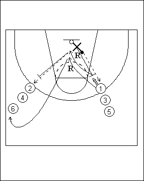

Catégorie : REBOND (Reb-04)
Déroulement
- Deux files de joueurs à hauteur de la ligne des trois points et un défenseur. Ce défenseur possède le ballon.
- Le défenseur passe au joueur 1 et effectue le close out pour défendre sur le shoot. Les deux joueurs jouent la bataille du rebond. Celui qui la gagne marque un point et joue en défense la fois suivante. Si 1 marque son shoot, il n’a pas de point, mais pourra jouer en défense la fois suivante.
- Dans ce cas, le panier n’a pas été marqué et c’est le défenseur (X) qui a capté le rebond. Il obtient ainsi un point et effectue maintenant le même travail avec 2. Après avoir essayé de gagner le rebond offensif, l va derrière 6 dans l’autre file.
Coaching points
- Il s’agit d’une « bataille du rebond », c’est-à-dire que l’agressivité (saine) doit être totale jusqu’au moment où le ballon est capté.
- Toute faute doit être sanctionnée par l’attribution d’un point à l’adversaire lésé.